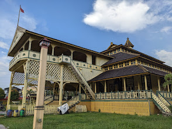

Sejarah
Nama Pontianak yang berasal dari bahasa Melayu yang dipercaya ada kaitannya dengan kisah Syarif
Abdurrahman yang sering diganggu oleh hantu Kuntilanak ketika dia menyusuri Sungai Kapuas. Menurut
ceritanya, Syarif Abdurrahman terpaksa melepaskan tembakan meriam untuk mengusir hantu itu sekaligus
menandakan di mana peluru meriam itu jatuh, di sanalah wilayah kesultanannya didirikan. Peluru
meriam itu jatuh di dekat persimpang Sungai Kapuas dan Sungai Landak, yang kini dikenal dengan nama
Kampung Beting.
Kota Pontianak didirikan oleh Syarif Abdurrahman Alkadrie pada hari Rabu, 23 Oktober 1771 (14 Rajab
1185 H) yang dimulai dengan membuka hutan di persimpangan Sungai Landak, Sungai Kapuas Kecil, dan
Sungai Kapuas Besar untuk mendirikan balai dan rumah sebagai tempat tinggal. Pada 1778 (1192 H),
Syarif Abdurrahman dikukuhkan menjadi Sultan Pontianak. Letak pusat pemerintahan ditandai dengan
berdirinya Masjid Jami' (kini bernama Masjid Sultan Syarif Abdurrahman) dan Istana Kadariah yang
sekarang terletak di Kelurahan Dalam Bugis, Kecamatan Pontianak Timur.
Geografis
Kota Pontianak terletak pada Lintasan Garis Khatulistiwa dengan ketinggian berkisar antara 0,1
sampai 1,5 meter di atas permukaan laut. Kota dipisahkan oleh Sungai Kapuas Besar, Sungai Kapuas
Kecil, dan Sungai Landak. Dengan demikian Kota Pontianak terbagi atas tiga belahan.
Kota Pontianak dialiri oleh Sungai Kapuas dan Sungai Landak. Sungai Kapuas adalah sungai terpanjang
di Indonesia, mengalir melalui jantung kota. Pontianak juga sering menghadapi masalah banjir,
terutama saat musim hujan, karena letaknya yang rendah dan dekat dengan garis khatulistiwa.
Wisata
Sejak berkembangnya infrastruktur dan transportasi, Kota Pontianak semakin menjadi tujuan wisata,
terutama karena lokasinya yang unik di garis khatulistiwa. Pontianak dikenal dengan ikon Tugu
Khatulistiwa, wisata sungai di sepanjang Sungai Kapuas, serta kekayaan kuliner khas Melayu dan
Tionghoa. Kota ini juga memiliki berbagai bangunan bersejarah seperti Istana Kadriah.
Istana Kadriah Kesultanan Pontianak

Istana Kadriah adalah salah satu destinasi wisata bersejarah di Kota Pontianak. Istana ini
merupakan kediaman resmi Sultan Pontianak dan didirikan pada tahun 1771 oleh Sultan Syarif
Abdurrahman Al-Qadrie, pendiri Kesultanan Pontianak. Bangunannya terbuat dari kayu ulin dan
memiliki ciri khas arsitektur Melayu dengan pengaruh Islam. Selain itu, di dalam istana terdapat
berbagai peninggalan bersejarah, termasuk singgasana, foto-foto keluarga kerajaan, serta
benda-benda pusaka.
Taman Khatulistiwa
Taman Khatulistiwa adalah salah satu destinasi wisata di Kota Pontianak yang terletak di sekitar
Tugu Khatulistiwa, monumen yang menandai titik garis lintang 0° Bumi. Taman ini menjadi tempat
populer untuk melihat fenomena kulminasi matahari, di mana bayangan benda-benda tegak menghilang
saat matahari tepat berada di atas khatulistiwa. Selain itu, Taman Khatulistiwa sering digunakan
sebagai area rekreasi dengan fasilitas untuk bersantai, berfoto, dan menikmati keunikan
geografis Pontianak.